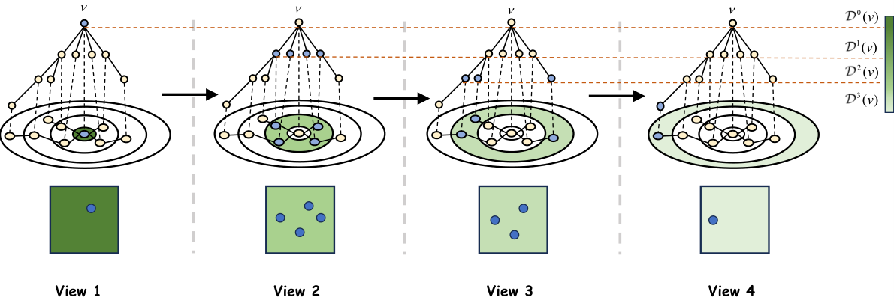
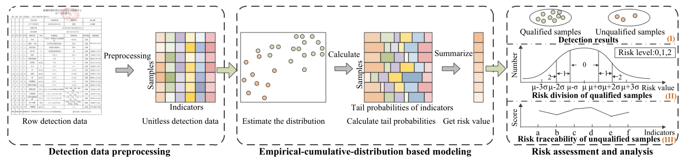
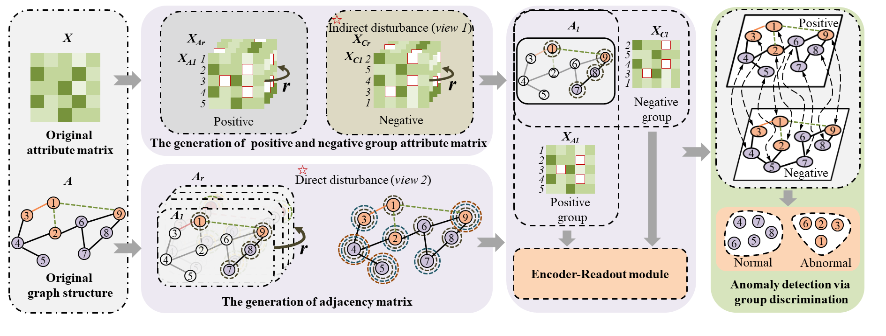
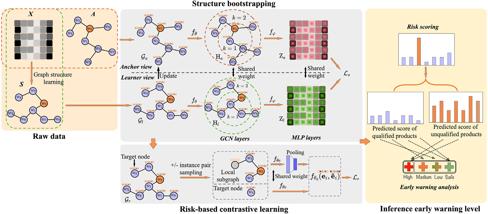
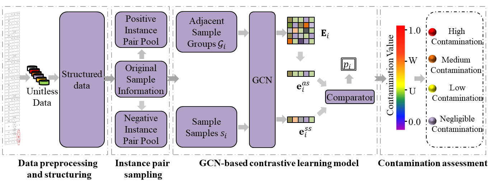

About me
Junyi Yan is a PhD student in National University of Defense Technology (NUDT) advised by Prof. Xinwang Liu. Her research interests include Graph Learning, Graph Anomaly Detection, and Deep Graph Clustering. She serves as reviewer for ACM MM, ACL ARR, ICME and DASFAA, etc.
Email: junyiiyan01@163.com / junyiyan@nudt.edu.cn
You can find me in: [Google Scholar]
[GitHub]
[ResearchGate]
[WeChat]
News
- 2025.05, One paper has been accepted by ICML 2025.
- 2025.04, Will serve as reviewer for ACM MM 2025.
- 2025.02, Will serve as reviewer for ACL ARR 2025 February.
- 2024.05, I was awarded the Outstanding Graduate of Xinjiang University in 2024.
- 2024.04, Will serve as reviewer for ACM MM 2024.
- 2024.01, Will serve as reviewer for ICME 2024.
- 2024.01, Will serve as reviewer for DASFAA 2024.
- 2023.10, I won the China National Scholarship for graduate students.
- 2023.08, One paper is accepted by EAAI.
- 2023.07, I was invited to Australia to participate in ICME 2023 oral presentation.
- 2023.05, One paper is accepted by ICME 2023.
- 2022.11, I won the Outstanding Graduate Student of Xinjiang University.
- 2022.10, I won the Xinjiang Uygur Autonomous Region Academic Scholarships of Xinjiang University.
- 2021.10, I won the Xinjiang Uygur Autonomous Region Academic Scholarships of Xinjiang University.
Experience
- 2024.09 - Now, Ph.D. student in Computer Science and Technology (Supervisor: Xinwang Liu), National University of Defense Technology.
- 2021.09 - 2024.06, M.S. student in Software Engineering (Supervisor: Xiaoyi Lv), Xinjiang University.
- 2017.09 - 2021.06, B.E. student in Computer Science and Technology, Hebei Agricultural University.
Selected Publications
(*: Corresponding author)
-
Scalable Attribute-Missing Graph Clustering via Neighborhood Differentiation
Yaowen Hu, Wenxuan Tu, Yue Liu, Xinhang Wan, Junyi Yan, Taichun Zhou, and Xinwang Liu*.
International Conference on Machine Learning (ICML 2025, CCF Rank A).
[Paper] -
An explainable unsupervised risk early warning framework based on the empirical cumulative distribution function: Application to dairy safety
Junyi Yan, Lei Sun, Enguang Zuo*, Zhong Jie, Tianle Li, Chen Chen, Cheng Chen, Xiaoyi Lv*.
Food Research International. (IF=8.1, JCR Q1, Accepted in Feb. 2024)
[Paper] -
Rethinking graph anomaly detection: A self-supervised Group Discrimination paradigm with Structure-Aware.
Junyi Yan, Enguang Zuo, Chen Chen, Cheng Chen, Jie Zhong, Tianle Li, Xiaoyi Lv*.
IEEE International Conference on Multimedia and Expo (ICME 2023, CCF Rank B) [Oral].
[Paper] [Appendix] [Code] [Slide] -
SUCOLA: Self-adaptive structure refinement unsupervised contrastive learning framework for food safety risk early warning.
Enguang Zuo, Junyi Yan, Alimjan Aysa, Chen Chen, Cheng Chen, Hongbing Ma, Xiaoyi Lv*, Kurban Ubul.
Engineering Applications of Artificial Intelligence. (IF=8.0, CCF Rank C, JCR Q1, Accepted in Aug. 2023)
[Paper] -
CSGNN: Contamination Warning and Control of Food Quality via Contrastive Self-Supervised Learning-Based Graph Neural Network.
Junyi Yan, Hongyi Li, Enguang Zuo*, Tianle Li, Chen Chen, Cheng Chen, Xiaoyi Lv*.
Foods. (IF=5.6, JCR Q2, Accepted in Feb. 2023)
[Paper]
2025
2024
2023
Awards
- 2023, China National Scholarship.
- 2022, Outstanding Graduate Student, Xinjiang University.
- 2022, Provincial Academic Scholarships, Xinjiang Uygur Autonomous Region.
- 2021, Provincial Academic Scholarships, Xinjiang Uygur Autonomous Region.
Services
- Conference Reviewers of ACM MM'25, ACM MM'24, DASFAA'24, ICME'24.
Talks
- Rethinking graph anomaly detection: A self-supervised Group Discrimination paradigm with Structure-Aware.
- 2023.7, IEEE International Conference on Multimedia and Expo (ICME 2023), Brisbane, Australia, Organized by four IEEE societies. [Slide]
Projects
- 2021.09 - 2023.5, A comprehensive demonstration of the whole chain of quality and safety assurance technology for Xinjiang's characteristic dairy products and dried fruits, Model Building and Interpretability Analysis.
- National Key Research and Development Program of China, Xinjiang University.
- 2021.09 - 2023.7, R&D(Research and Development) and Application Demonstration of Key Technologies for Food Safety Risk Assessment Platform in Xinjiang Region, Model Building and Interpretability Analysis.
- Major science and technology projects of Xinjiang Uygur Autonomous Region, Xinjiang University.